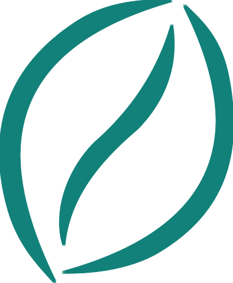
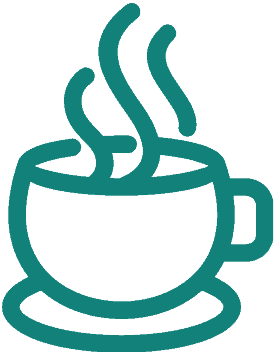
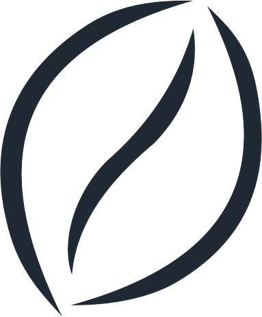

В Kadence Starter Template «Coffee Shop» цвет Palette 2 (#12807A) является основным для верхней полосы, пунктов меню и логотипа.
#12807A, пункты меню (Navigation Menu) — #12807A. Изумрудное зерно Mosenc в цвете #12807A на 100% совпадает с палитрой сайта!
Изящный чистый контур зерна в точнейшем цвете Palette 2 (#12807A).
Файл: mosenc-bean-teal-crop.png
Тот же цвет #12807A, но линии утолщены, чтобы дать такую же оптическую плотность, как у чашки.
Файл: mosenc-bean-teal-bold.png

Массивный контур шаблона (для сравнения оптической плотности).
Файл: cup.png

Максимальный контраст и строгость, солидный образ обжарки (#1F2933).
Файл: mosenc-bean-espresso-crop.png
